Syllabus & Marks Distribution
| Detail | Information |
|---|---|
| Course | Seismic Resistant Design of Masonry Structures — ENCE 367 (Elective I) |
| Chapter | 1 — Earthquakes and Seismic Ground Motion |
| Teaching Hours | 6 hours |
| Marks Allocation | 8 marks |
| Total Course Marks | 60 marks (final exam) · 45 teaching hours |
| Weight | 13.3% of the final paper |
| Codes commonly allowed | IS 1905–1987, IS 1893 (Part 1), NBC 105 |
Syllabus Topics
- 1.1 Origin of earthquake
- 1.2 Seismic waves, earthquake ground motion, magnitude and intensity
- 1.3 Occurrence of earthquakes; loss and damages
- 1.4 Time history, frequency spectra, and response spectra of earthquake force
- 1.5 Effects of earthquake on building
Importance & Frequently Asked Topics HIGH
Question 1 of the paper has come from this chapter in 4 of the last 6 papers. Total 46 marks across those papers, i.e. an average of ~8 marks per paper — exactly the weight the new syllabus assigns. It is a pure theory chapter: no numericals have ever been asked from it, so it is the cheapest chapter in the course to score full marks in.
Marks Distribution by Each Exam
| Exam | Marks | Questions asked |
|---|---|---|
| 2075 Chaitra | — | Whole paper was masonry design |
| 2076 Chaitra | — | Whole paper was Ch 2–4 |
| 2078 Bhadra | 6 | Q1a — Richter scale and MMI scale |
| 2079 Bhadra | 16 | Q1a — elastic rebound + origin in Himalayas; Q1b — magnitude vs intensity |
| 2080 Bhadra | 8 | Q1a — define earthquake, source, factors influencing shaking |
| 2081 Bhadra | 16 | Q1a — earthquake as lateral force; Q1b — earthquake force parameters |
Frequently Asked Topics
| Topic | Times Asked | Frequency |
|---|---|---|
| Origin of earthquake — elastic rebound, source, Himalayan seismotectonics | 2 | |
| Magnitude & intensity — Richter vs MMI scale | 2 | |
| Earthquake as a lateral (inertia) force in a building | 1 | |
| Earthquake force parameters | 1 | |
| Factors influencing the shaking at a site | 1 | |
| Seismic waves (P, S, Love, Rayleigh) | 0 direct | |
| Time history, frequency spectra, response spectra | 0 direct |
Topic-wise Importance & Exam Tips
| Topic | Importance | Key Points / Exam Tips |
|---|---|---|
| Elastic rebound theory & origin of Himalayan earthquakes | High | Always draw the 4-stage elastic rebound sketch. For Nepal, mention India–Eurasia convergence at ~2–5 cm/yr, the MFT–MBT–MCT–MHT thrust system and the locked Main Himalayan Thrust. |
| Magnitude vs Intensity (Richter vs MMI) | High | Present as a comparison table. Give the numbers: 1 unit of magnitude = 10× wave amplitude and ~31.6× energy. Mention MMI has 12 grades (I–XII) and is drawn as an isoseismal map. |
| Earthquake as a lateral force in a building | High | Start with FI = m × a, draw the base-moves/mass-lags sketch, then show the load path: slab → walls → foundation → soil. Add why horizontal shaking governs. |
| Earthquake force parameters | High | Split into ground parameters (PGA, PGV, PGD, duration, frequency content) and structure parameters (mass, stiffness, natural period, damping, ductility). Add code parameters Z, I, R, Sa/g. |
| Factors influencing shaking at a site | Medium | Group into source – path – site: magnitude & focal depth; epicentral distance & travel path; local soil, topography and basin effects. |
| Seismic waves and their effects | Medium | A wave comparison table (P / S / Love / Rayleigh) with velocity, particle motion and damage potential answers most sub-parts. Note S and Love waves are the most damaging to masonry. |
| Effects of earthquake on buildings | Medium | Overlaps with Chapter 3. Keep the six classic masonry damage patterns ready: corner separation, in-plane diagonal (X) shear cracks, out-of-plane overturning, roof/floor separation, delamination, pounding. |
| Time history, frequency spectra, response spectra | Medium | Not yet asked directly, but it is explicitly in the new syllabus. Learn the 3-line definition of each plus the response-spectrum construction sketch and the 5% damping convention. |
| Occurrence, loss and damage / seismic hazards | Low | Usually a sub-part. Keep the 7-item hazard list and 3–4 Nepali earthquakes (1934, 1988, 2015 Gorkha, 2080 Jajarkot) with dates, magnitudes and death tolls. |
1.1 Origin of Earthquake 2079 Bhadra2080 Bhadra
PAST EXAM QUESTIONS ON THIS TOPIC:
- Define elastic rebound theory. Explain the origin of earthquakes in Himalayas. [8] (2079 Bhadra, Q1a)
- Define earthquake, its source and influencing factor of shaking in the location. [8] (2080 Bhadra, Q1a)
1.1.1 What is an Earthquake?
Earthquake is the sudden shaking or trembling of the earth's surface caused by the rapid release of strain energy accumulated in elastically strained rocks of the earth's crust. The released energy radiates in all directions from its source in the form of seismic waves, and when these waves reach the ground surface they set the ground — and everything standing on it — into motion.
“An earthquake is the vibration of the earth produced by the rapid release of accumulated strain energy in elastically strained rocks, usually associated with the sudden rupture (faulting) of rock along a plane of weakness.”
1.1.2 Source of an Earthquake — Focus and Epicentre
- Focus (Hypocentre) — the point inside the earth where the rupture begins and from where the seismic energy is first released. This is the source of the earthquake.
- Epicentre — the point on the ground surface vertically above the focus. Shaking is generally strongest here.
- Focal depth — the vertical depth of the focus below the epicentre.
- Epicentral distance — horizontal distance from the epicentre to the site; hypocentral distance is the slant distance from the focus to the site.
- Fault — a fracture (crack) in the earth's crust along which the two sides have moved relative to each other, parallel to the fracture surface.
Classification by focal depth
| Class | Focal depth | Remark |
|---|---|---|
| Shallow | < 70 km | Most destructive — energy is released close to the surface. Almost all Nepali earthquakes are of this type. |
| Intermediate | 70 – 300 km | Felt over a wide area but with lower surface acceleration. |
| Deep | 300 – 700 km | Rarely damaging at the surface. |
About 90% of earthquake foci are shallower than 100 km, large earthquakes are mostly at less than 60 km depth, and no earthquake occurs deeper than about 700 km because below that the rock is too ductile to store elastic strain.
1.1.3 Causes of Earthquakes
| Type | Cause |
|---|---|
| Tectonic (most important) | Sudden slip of tectonic plates along faults; accounts for over 90% of all earthquakes and virtually all damaging ones. |
| Volcanic | Movement of magma and gas explosions beneath a volcano. |
| Collapse | Roof collapse of underground caverns, mines or karst caves. |
| Explosion | Chemical or nuclear detonations. |
| Reservoir-induced | Impounding of very large reservoirs increases pore water pressure and triggers slip on nearby faults. |
1.1.4 Interior of the Earth
Understanding why plates move needs a quick look at the earth's layers, because it is the temperature difference between the core and crust that drives convection in the mantle and therefore plate motion.
| Layer | Approx. thickness | Nature |
|---|---|---|
| Crust | Continental 25–40 km; oceanic ~6 km | Cold, rocky and brittle — this is where earthquakes rupture. |
| Upper mantle | ~650 km | Solid but deforms plastically; convection currents here drag the plates. |
| Lower mantle | ~2235 km | Solid silicates of Fe, Mg, Al, Si and O at over 1000 °C. |
| Outer core | ~2270 km | Liquid iron with ~10% sulphur — S-waves cannot pass through it. |
| Inner core | ~1216 km | Solid iron, kept solid by immense pressure. |
The rigid outermost shell — the crust plus the uppermost mantle, about 80–100 km thick — is called the lithosphere, and it is broken into the tectonic plates.
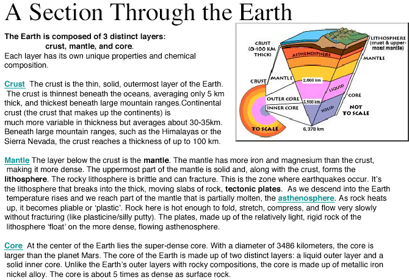
1.1.5 Theory of Plate Tectonics
Proposed in the 1960s and developed from Alfred Wegener's 1915 theory of continental drift, plate tectonics is the unifying theory that explains the formation and deformation of the earth's surface. According to it the lithosphere is divided into about 12 major plates that float on the plastic upper mantle and move relative to one another at a few centimetres per year. Earthquakes, volcanoes and mountain ranges are concentrated at the boundaries of these plates.
Evidence for continental drift
- Matching coastlines (South America and Africa fit like jigsaw pieces).
- Matching mountain ranges across the Atlantic (Appalachians – Caledonides).
- Matching rock types and radiometric rock ages on facing coasts.
- Matching glacial deposits of ~300 million years ago in now-tropical continents.
- Matching fossils — e.g. Mesosaurus, a freshwater reptile, found on both sides of the Atlantic.
Types of plate boundary
| Boundary | Relative motion | Features | Example |
|---|---|---|---|
| Divergent (constructive) | Plates move apart | New crust forms; shallow, moderate earthquakes; volcanoes | Mid-Atlantic Ridge |
| Convergent — oceanic/continental | Plates move together, denser oceanic plate subducts | Deep-focus earthquakes along the inclined Benioff zone; volcanic arcs; trenches | Andes, Japan trench |
| Convergent — continental/continental | Plates collide, neither subducts | Crust thickens and thrusts upward; very large shallow earthquakes; no volcanoes | Himalaya |
| Transform (conservative) | Plates slide past each other | Strike-slip faulting; shallow earthquakes; crust neither created nor destroyed | San Andreas Fault |
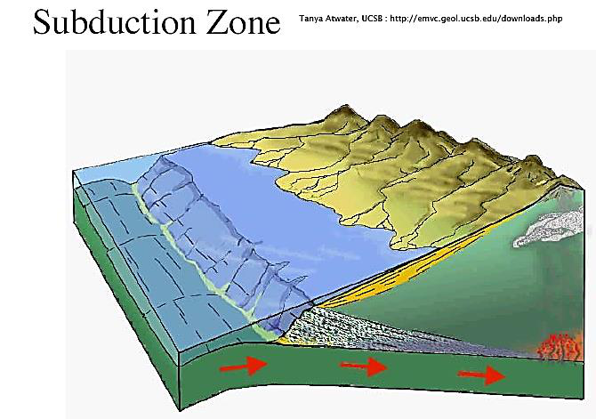
1.1.6 Elastic Rebound Theory 2079 Bhadra, Q1a
Proposed by H. F. Reid after studying the 1906 San Francisco earthquake, the elastic rebound theory is the standard explanation of how an earthquake is generated:
Foreshocks and aftershocks
- Foreshocks — smaller earthquakes that precede the main shock by days or sometimes years, as the rock progressively fails.
- Aftershocks — smaller earthquakes that follow the main shock as the crust readjusts to the new stress state. They are the biggest danger to already-cracked masonry buildings, which is why damaged buildings must be shored immediately.
- Whether a tremor was a foreshock or an aftershock is only known after the main shock has occurred.
1.1.7 Faults and Fault Types
A fault is a fracture in the crust along which the two blocks have moved relative to each other. The block resting above the inclined fault plane is the hanging wall and the one below is the footwall. The orientation of a fault is described by its strike (compass direction of the fault line on the surface) and its dip (angle of the fault plane from horizontal).
1.1.8 Origin of Earthquakes in the Himalayas 2079 Bhadra, Q1a
The Himalaya is the classic continent–continent convergent margin:
- About 225 million years ago the Indian plate, carrying the Indian landmass, separated from Gondwanaland and began drifting northwards at roughly 10 cm per year, with the intervening Tethys oceanic crust subducting beneath the Eurasian plate.
- Around 55 million years ago the Tethys closed and India collided with Asia. Because both are continental crust of about the same low density, neither could subduct beneath the other.
- The only way the collision pressure could be relieved was by crustal thickening and thrusting upward, contorting the collision zone and raising the Himalayan range. This is why the Himalaya has great earthquakes but no volcanoes.
- Convergence continues today at about 2 cm/yr (India–Eurasia ~4–5 cm/yr, of which about 2 cm/yr is absorbed across the Himalaya). Nepal therefore shortens by roughly 2 m per century.
- This shortening is taken up on a system of north-dipping thrust faults that all sole into one gently
north-dipping detachment, the Main Himalayan Thrust (MHT):
- MFT — Main Frontal Thrust (southernmost, active, at the Terai–Siwalik front)
- MBT — Main Boundary Thrust (Siwalik–Lesser Himalaya)
- MCT — Main Central Thrust (Lesser–Higher Himalaya)
- STDS — South Tibetan Detachment System (northernmost, normal fault)
- The shallow part of the MHT is locked by friction between earthquakes. Strain accumulates for decades to centuries and is then released suddenly as a great earthquake — exactly the elastic rebound mechanism. The 2015 Gorkha earthquake (Mw 7.8) was a rupture of the locked MHT that propagated eastward from Barpak, Gorkha, at a focal depth of about 15 km.
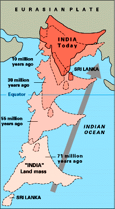
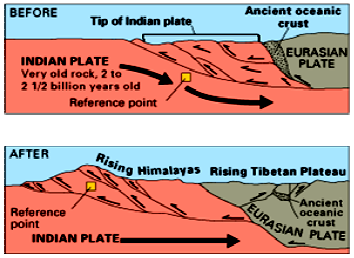
1.1.9 Factors Influencing the Shaking at a Location 2080 Bhadra, Q1a
The severity of shaking at a particular site is not governed by magnitude alone. It is best remembered under three headings — source, path and site:
| Group | Factor | Effect on shaking |
|---|---|---|
| Source | Magnitude (energy released) | Larger magnitude → larger amplitude and longer duration. |
| Focal depth | Shallow focus → much stronger surface shaking for the same magnitude. | |
| Fault mechanism & rupture directivity | Thrust faults give large vertical components; shaking is amplified in the direction the rupture propagates. | |
| Length & area of rupture | Longer rupture → longer duration of strong shaking. | |
| Path | Epicentral / hypocentral distance | Amplitude attenuates rapidly with distance. |
| Geology along the travel path | Reflection and refraction at layer boundaries change amplitude and frequency content. | |
| Site | Local soil type & depth | Soft, deep, unconsolidated soil (e.g. the Kathmandu Valley lake deposits) amplifies shaking and lengthens its period; rock sites shake less. |
| Topography | Ridges, hill tops and steep slopes amplify base-rock acceleration by resonance — the “ridge effect”. | |
| Basin geometry | Sediment-filled basins trap surface waves and prolong shaking. | |
| Ground water table / liquefiable soil | Saturated loose sand may liquefy, changing shaking and causing settlement. | |
| Structure | Nature of the structure | Damage also depends on the building's own period, mass, stiffness, ductility, configuration and construction quality — resonance greatly increases response. |
- Definition (2 lines) + one sentence on rapid release of strain energy.
- Source: focus/hypocentre, epicentre, focal depth — with Fig. 1.1.
- Cause of the source: plate tectonics → faulting → elastic rebound (2 lines).
- Influencing factors in the source–path–site table above (list at least 8).
- Close with one line on Kathmandu Valley soft-soil amplification — it earns the extra mark.
1.2 Seismic Waves, Earthquake Ground Motion, Magnitude and Intensity 2078 Bhadra2079 Bhadra
PAST EXAM QUESTIONS ON THIS TOPIC:
- Explain the magnitude and intensity of the earthquake. Compare the MMI scale with the Richter scale. [8] (2079 Bhadra, Q1b)
- Explain Richter scale and MMI scale. [6] (2078 Bhadra, Q1a)
1.2.1 Sequence of Events
1.2.2 Seismic Waves
The energy released at the focus travels through and over the earth as seismic waves. They are of two broad classes:
(A) Body waves — travel through the earth's interior
| Feature | Primary (P) wave | Secondary (S) wave |
|---|---|---|
| Other name | Compressional / longitudinal / push-pull wave | Shear / transverse / distortional wave |
| Particle motion | Parallel to the direction of wave travel — alternate compression and dilation (like a slinky) | Perpendicular (at right angles) to the direction of travel — shearing (like a rope flick) |
| Velocity in the crust | Fastest — about 6 km/s (range 1.5–8 km/s) | About 3 km/s, roughly 0.5–0.6 times the P-wave speed |
| Medium | Travels through solids, liquids and gases | Travels through solids only — velocity drops to zero at the core–mantle (Gutenberg) discontinuity, proving the outer core is liquid |
| Arrival on a seismogram | First | Second |
| Damage potential | Low — small amplitude; felt as a bump that rattles windows, like a sonic boom | High — causes severe shearing and stretching; the vertical and horizontal shaking is very damaging to structures |
(B) Surface waves — travel along or just below the ground surface
| Feature | Love (L) wave | Rayleigh (R) wave |
|---|---|---|
| Particle motion | Horizontal shearing side-to-side, at right angles to the direction of travel, with no vertical component | Elliptical, rolling — vertical plus back-and-forth horizontal motion in a vertical plane, like an ocean swell |
| Velocity | Less than the S wave, but faster than Rayleigh waves | About 0.9 times the S-wave velocity — the slowest |
| Arrival | After the S wave | Last |
| Effect | Horizontal shaking is particularly damaging to the foundations and walls of buildings; does not propagate through water | Rolling motion; long duration; especially damaging to tall/long-period structures; can affect lakes |
Surface waves are generated when the body waves reach the free surface. They decay more slowly with distance than body waves, so at large epicentral distances the surface waves dominate the record. In general, high-frequency body waves shake low-rise (stiff) buildings more, while low-frequency surface waves shake tall (flexible) buildings more. Whenever a P or S wave is reflected or refracted at an interface, part of its energy is converted into the other wave type.
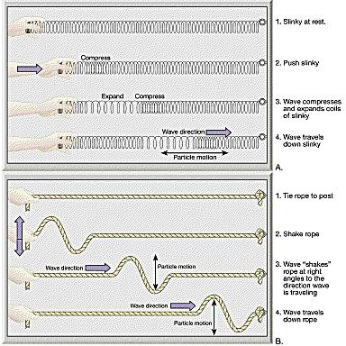
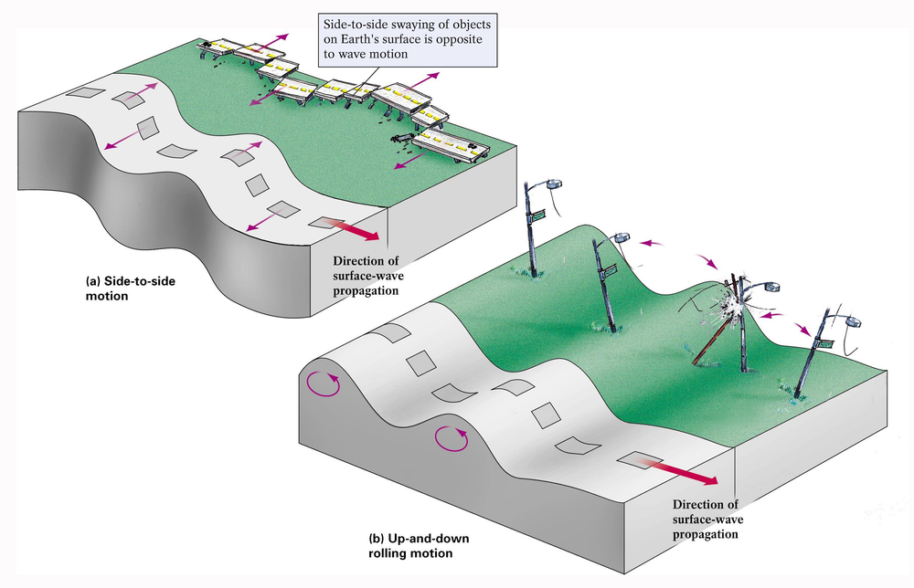
1.2.3 Recording and Locating an Earthquake
- A seismograph records ground motion using a mass with such large inertia that it stays effectively at rest while the frame and ground move around it; the relative movement is recorded.
- The record it produces is a seismogram, showing the P, S and surface wave arrivals.
- A strong-motion accelerograph records three orthogonal components of ground acceleration (two horizontal — usually N–S and E–W — and one vertical) and is the instrument used for engineering design data.
Locating the epicentre. Because the P wave is faster than the S wave, the time gap between the P and S arrivals increases with distance from the epicentre. Each station converts its S–P time interval into a distance D and draws a circle of radius D around itself on a map. Three or more stations are required; the single point where the three circles intersect is the epicentre (triangulation). About 95% of major earthquakes occur within a few narrow belts that mark the plate boundaries.
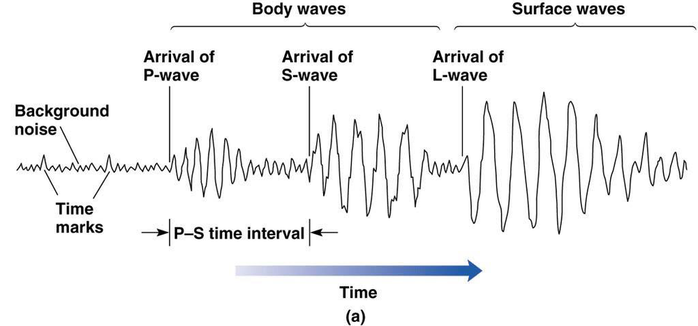
1.2.4 Earthquake Ground Motion Parameters
An accelerogram can be integrated once to obtain the ground velocity time history and twice to obtain the ground displacement time history. Three quantities describe the destructiveness of the record:
| Parameter | Symbol | Meaning & engineering significance |
|---|---|---|
| Amplitude | PGA, PGV, PGD | Peak Ground Acceleration is the largest absolute acceleration in the record. It directly fixes the inertia force (F = m a) and is the parameter used in codes. PGV correlates better with damage to medium-period structures and PGD with long-period structures and lifelines. |
| Duration | td | Length of strong shaking. Long duration means many cycles of load reversal, which progressively degrades masonry — a M7.8 event shaking for 50 s is far more destructive than a M6 event shaking for 5 s at the same PGA. |
| Frequency content | — | Distribution of energy over frequency. If the dominant ground period matches the building's natural period, resonance occurs and response is greatly magnified. |
• as a fraction of g — e.g. 0.36 g • in m/s2 — 1 g = 9.81 m/s2 • in Gal — 1 Gal = 0.01 m/s2, so 1 g = 981 Gal.
PGA varies enormously over a few kilometres because of ground type, so a moderate earthquake on soft soil can produce a larger PGA than a bigger earthquake on rock. The spatial variation is plotted as a shake map. In each record the peaks of the two horizontal components (H1, H2) and the vertical component (V) are reported; the peak horizontal ground acceleration is taken as the larger component, the mean of the two, or their vector sum.
1.2.5 Magnitude 2078 Bhadra2079 Bhadra
Magnitude is a quantitative, instrumental measure of the size of an earthquake — that is, of the total energy released at the source. It is a single number for a given earthquake, independent of where it is measured.
(a) Richter scale (local magnitude, ML)
- Devised by Charles F. Richter in 1935. It is based on the logarithm (base 10) of the maximum trace amplitude recorded by a standard Wood–Anderson seismograph, corrected to a standard epicentral distance of 100 km.
- Because it is logarithmic, an increase of one unit of magnitude means 10 times larger wave amplitude and about 31.6 (≈32) times more energy released.
- Hence an M7.7 earthquake releases about 31 times the energy of an M6.7, and about 31×31 ≈ 1000 times that of an M5.7.
- The scale is open-ended and can be negative for very small tremors, but it saturates — it does not adequately distinguish the size of very large earthquakes (above about M7).
Energy–magnitude relation (Gutenberg–Richter): log10 E = 11.8 + 1.5 M (E in ergs)
(b) Moment magnitude (Mw)
Derived from the seismic moment M0 = µ A D, where µ is the rigidity of the rock, A the ruptured fault area and D the average slip. Because it is calculated from the physical size of the rupture rather than from one instrument trace, it does not saturate and is the scale now used for all large earthquakes — the 2015 Gorkha earthquake is quoted as Mw 7.8.
| Magnitude | Class | Approximate effects & frequency |
|---|---|---|
| < 3.0 | Micro / minor | Not felt; recorded only by instruments. Many thousands per day worldwide. |
| 3.0 – 3.9 | Minor | Often felt indoors, rarely causes damage. |
| 4.0 – 4.9 | Light | Noticeable shaking, negligible damage. |
| 5.0 – 5.9 | Moderate | Damage to poorly built (unreinforced masonry) structures. |
| 6.0 – 6.9 | Strong | Destructive up to ~100 km across; ~100–150 per year. |
| 7.0 – 7.9 | Major | Serious damage over large areas; ~10–20 per year. |
| ≥ 8.0 | Great | Devastation over several hundred kilometres; about 1 per year. |
1.2.6 Intensity
Intensity is a qualitative, observational measure of the actual effects of an earthquake at a particular place — on people, objects, buildings and the ground. Because the effects change from place to place, one earthquake has many intensity values but only one magnitude. Intensity is highest near the epicentre and decreases outward; lines joining points of equal intensity are called isoseismals, and their map is used to identify the epicentre of historic (pre-instrumental) earthquakes and to prepare seismic hazard maps.
The scale used is the Modified Mercalli Intensity (MMI) scale, which has 12 grades written in Roman numerals I to XII. Other scales in use are the MSK-64 (Europe, also 12 grades) and the JMA scale (Japan).
| MMI | Description of observed effects |
|---|---|
| I | Not felt except by a very few under especially favourable conditions. |
| II – III | Felt by a few people at rest, especially on upper floors; standing motor cars may rock. |
| IV | Felt indoors by many; windows, doors and dishes rattle; hanging objects swing. |
| V | Felt by nearly everyone; some crockery broken; unstable objects overturned. |
| VI | Felt by all, many frightened; slight damage; plaster falls. |
| VII | Negligible damage in well-built structures; considerable damage in poorly built masonry; difficulty in standing. |
| VIII | Great damage in poorly built structures; partial collapse of ordinary masonry; chimneys and monuments fall. |
| IX | Considerable damage even in well-designed structures; buildings shifted off foundations; ground cracks conspicuously. |
| X | Most masonry and frame structures destroyed with their foundations; rails bent; landslides. |
| XI | Few structures remain standing; bridges destroyed; broad fissures in ground. |
| XII | Total damage; lines of sight distorted; objects thrown into the air. |
1.2.7 Comparison of Magnitude (Richter) and Intensity (MMI) 2079 Bhadra, Q1b
| Basis | Magnitude — Richter scale | Intensity — MMI scale |
|---|---|---|
| What it measures | Energy released at the source (size of the earthquake) | Effect / severity of shaking at a particular place |
| Nature | Quantitative and objective | Qualitative and subjective (based on observation) |
| How obtained | Measured instrumentally from a seismogram | Assessed from damage surveys and human reports; no instrument |
| Number of values | One value per earthquake | Many values — different at every location |
| Depends on distance? | No — independent of the observer's position | Yes — decreases with epicentral distance |
| Depends on local soil / building type? | No | Yes — strongly |
| Notation | Arabic numerals with decimals (e.g. 7.8) | Roman numerals, I to XII (e.g. IX) |
| Scale type | Logarithmic, open-ended (can be negative) | Descriptive, bounded I–XII |
| Represented by | A single point — the epicentre | Isoseismal map (contours of equal intensity) |
| Use in engineering | Source characterisation, energy, magnitude–frequency (recurrence) relations | Damage assessment, seismic zoning, vulnerability studies, historic earthquake catalogues |
| Applicable for old earthquakes? | No — needs instruments (post-1900) | Yes — can be inferred from historical records |
Approximate correlation between Richter magnitude and MMI
| Magnitude (Richter) | MMI at the epicentre | Perceived intensity / effects |
|---|---|---|
| < 2.0 | I | Not felt except by a very few under special conditions. |
| 2.0 – 2.9 | II – III | Felt only by a few people at rest, especially on upper floors. |
| 3.0 – 3.9 | III – IV | Often felt indoors; may cause hanging objects to swing. |
| 4.0 – 4.9 | IV – V | Felt by most people indoors; windows and doors rattle. |
| 5.0 – 5.9 | V – VI | Felt by everyone; small objects fall; minor damage possible. |
| 6.0 – 6.9 | VI – VII | Damage to poorly built structures; people have difficulty standing. |
| 7.0 – 7.9 | VII – IX | Moderate to heavy damage in populated areas; cracks in buildings. |
| 8.0 – 8.9 | IX – X | Heavy damage; some buildings collapse; ground may crack. |
| 9.0 and above | X – XII | Devastating; major destruction, ground waves, landslides, tsunamis. |
- Define magnitude (2 lines) + Richter definition + the 10× amplitude / 32× energy fact + energy formula.
- Define intensity (2 lines) + MMI I–XII + isoseismal map.
- The comparison table above — at least 8 rows. This carries most of the marks.
- Finish with the Richter–MMI correlation table or a small isoseismal sketch.
1.3 Occurrence of Earthquakes; Loss and Damages
1.3.1 Where do Earthquakes Occur?
Earthquakes are not scattered at random. About 95% of all major earthquakes occur in a few narrow belts that coincide with the boundaries of the tectonic plates:
- Circum-Pacific belt (“Ring of Fire”) — about 80% of all earthquakes; associated with subduction around the Pacific.
- Alpide (Mediterranean–Himalayan) belt — about 15%; runs from the Mediterranean through Iran and the Himalaya to Indonesia. Nepal lies in this belt.
- Mid-oceanic ridge belt — the remaining ~5%; shallow and mostly moderate earthquakes.
- A small number of intraplate earthquakes occur far from any boundary.
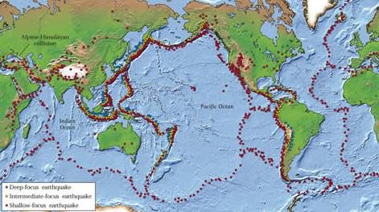
1.3.2 Seismic Hazards
Ground shaking is the primary hazard, and it is what causes all the others:
| # | Hazard | Description |
|---|---|---|
| 1 | Ground shaking | The primary hazard. Its severity depends on source (size, mechanism), path (depth, distance, rock type) and site (soil layering, topography, basin) conditions. Great events can shake catastrophically for several minutes. |
| 2 | Structural hazards | Collapse or damage of buildings, especially unreinforced masonry — the single largest cause of death. |
| 3 | Liquefaction | Loose, saturated, cohesionless soil temporarily behaves as a fluid: bearing capacity is lost, buildings sink or tilt, buried tanks float up, sand boils erupt, and lateral spreading cracks roads and embankments. |
| 4 | Landslides & rockfall | Triggered by the vibration, particularly on the steep slopes of Nepal — frequently the greatest cause of damage and of blocked access after a Himalayan earthquake. |
| 5 | Retaining structure failure | Liquefied or shaken soil exerts much higher pressure on retaining walls and quay walls, which tilt, slide or overturn. |
| 6 | Lifeline hazards | Failure of water supply, sewers, electricity, gas, roads, bridges and communications — this also prevents fire fighting and rescue. |
| 7 | Tsunami and seiche | Tsunamis are long sea waves generated by the sudden vertical displacement of the sea floor or by submarine landslides; a seiche is the sloshing of a closed water body such as a lake or reservoir. |
| 8 | Fire following earthquake | An indirect but devastating effect — broken gas and electrical lines ignite fires while the water mains are broken and roads blocked (San Francisco 1906, Kobe 1995). |
| 9 | Ground displacement | Surface fault rupture producing fault scarps; anything built across the fault is torn apart. |
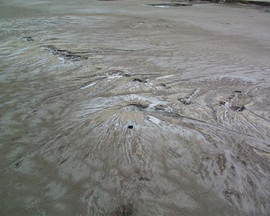
1.3.3 Factors Governing the Extent of Damage
Damage is a site-specific parameter — it depends not only on the size of the earthquake but on:
- The distance between the source (focus/hypocentre) and the site.
- The magnitude of the earthquake — the amount of energy released.
- The type of soil or rock at the site — unconsolidated materials amplify shaking far more than rock, and fine-grained sensitive soils may lose strength altogether by liquefaction.
- The nature of the structures — their period, mass, stiffness, ductility, configuration, material and construction quality. Timber is flexible and performs well; earthen and unreinforced masonry construction is highly vulnerable.
- The duration of shaking and the number of load reversals.
- Time of day, population density and preparedness — which govern the human loss for a given physical damage.
1.3.4 Major Historic Earthquakes of the World
| Year | Location | Magnitude | Deaths (approx.) |
|---|---|---|---|
| 1556 | Shaanxi, China | 8.0 | 830,000 |
| 1906 | San Francisco, USA | 7.9 | 700 (most loss from the fire) |
| 1960 | Southern Chile | 9.5 — largest ever recorded | 2,230 |
| 1964 | Alaska, USA | 9.2 | 131 |
| 1976 | Tangshan, China | 7.8 | ~700,000 |
| 1985 | Mexico City, Mexico | 8.1 | 9,500 — classic soft-soil resonance case |
| 1989 | Loma Prieta, California | 7.1 | 62 |
| 1995 | Kobe, Japan | 6.9 | 5,472 |
| 2001 | Bhuj, Gujarat, India | 6.9 (Mw 7.7) | ~20,000 |
| 2015 | Gorkha, Nepal | 7.8 | ~9,000 |
1.3.5 Earthquake History of Nepal
| Year (AD / BS) | Event and losses |
|---|---|
| 1255 AD (1310 BS) | The first recorded earthquake in Nepal. About one third of the population of Kathmandu Valley was killed, including King Abhaya Malla. |
| 1408, 1681, 1810, 1823, 1834 AD | Series of damaging historical earthquakes recorded in the chronicles. |
| 1833 AD (1890 BS) | Major earthquake during the reign of King Rajendra Bikram Shah; heavy damage in the Valley. |
| 1934 AD (1990 BS) | The Nepal–Bihar Earthquake, popularly “Navau Sal ko Bhukampa”. Magnitude 8.4. About 8,519 people killed in Nepal, 80,893 buildings destroyed and 126,355 damaged in the Kathmandu Valley. Dharahara collapsed (rebuilt 1956). |
| 1980 AD (2037 BS) | Bajhang earthquake, M 6.5 — far-western Nepal. |
| 1988 AD (2045 BS) | Udayapur earthquake, M 6.6. About 721 deaths and heavy damage to masonry buildings in eastern Nepal, including Bhaktapur. |
| 2011 AD (2068 BS) | Nepal–Sikkim earthquake, M 6.9. |
| 2015 AD (2072 BS) | Gorkha earthquake, Mw 7.8, epicentre Barpak (Gorkha), focal depth ~15 km, on 25 April, followed by a Mw 7.3 aftershock on 12 May. About 9,000 deaths, ~22,000 injured, about 800,000 houses damaged or destroyed (the great majority unreinforced masonry), several UNESCO monuments destroyed including Dharahara. Losses estimated at about one-third of GDP. |
| 2023 AD (2080 BS) | Jajarkot earthquake, M 6.4, 3 November. About 154 deaths; almost all the collapsed buildings were random rubble stone masonry in mud mortar — the failure mechanisms of these buildings were asked directly in 2081 Bhadra, Q2a. |
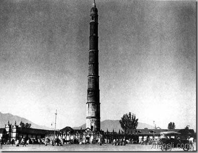
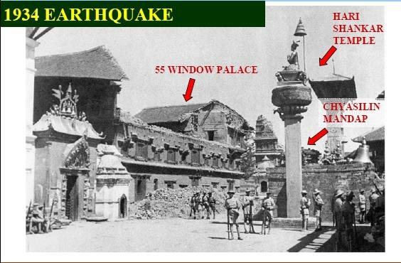
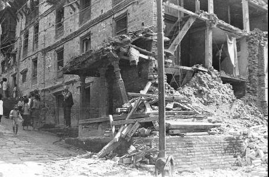
1.4 Time History, Frequency Spectra and Response Spectra of Earthquake Force
1.4.1 Accelerogram and Time History
The most direct description of an earthquake motion in the time domain is the accelerogram, recorded by a strong-motion accelerograph. It records three orthogonal components of ground acceleration — two horizontal and one vertical — at a given location.
- From a single accelerogram we can read directly the peak ground acceleration, the duration and (after processing) the frequency content of the shaking.
- Integrating the acceleration record once gives the ground velocity time history, and integrating again gives the ground displacement time history.
- Nepal's own records — for example the Kantipath record of the 2015 Gorkha earthquake — are used as input for time-history analysis of buildings in the Kathmandu Valley.
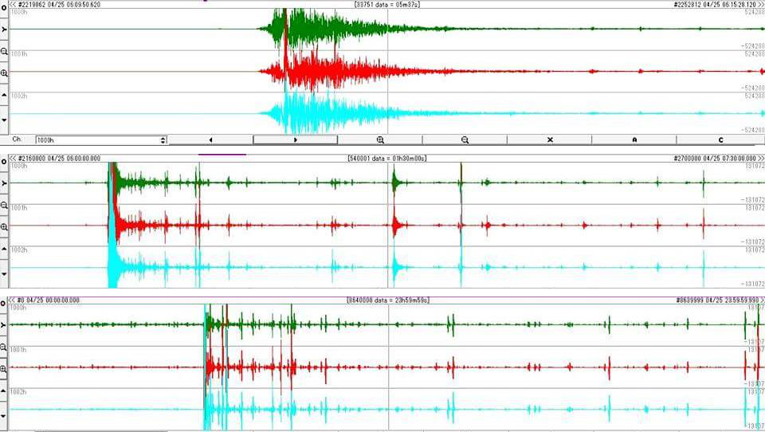
Time-history analysis
Time-history analysis evaluates the linear or nonlinear dynamic response of a structure to a loading that varies with time. The dynamic equilibrium equation is solved step by step:
where M = mass matrix, C = damping matrix, K = stiffness matrix, u = relative displacement and üg = ground acceleration.
It is solved either by modal superposition or by direct integration. Direct integration is sensitive to the time-step size, which must be reduced until the results stop changing. It is the most sophisticated and most expensive level of analysis, and is reserved for irregular, very tall or critically important structures.
1.4.2 Frequency Spectra
- An earthquake record is not a single sine wave — it is the sum of a large number of harmonic components of different frequencies. The frequency spectrum shows how much energy is carried at each frequency.
- The frequency at which the amplitude is largest is the predominant frequency (its inverse being the predominant period) of the ground motion.
- Longer wavelength → smaller frequency; shorter wavelength → larger frequency.
- Engineering use: if the predominant period of the ground motion is close to the fundamental natural period of the building, resonance occurs and the response is greatly magnified. Soft deep soils have long predominant periods and therefore endanger tall flexible buildings; rock sites have short predominant periods and endanger low, stiff buildings such as ordinary masonry houses.
1.4.3 Response Spectra
How it is constructed
- Take a set of SDOF oscillators (a mass on a spring) with natural periods covering, say, 0 to 4 seconds, all with the same damping ratio — conventionally 5% of critical damping.
- Apply the same recorded ground acceleration time history to the base of every oscillator.
- Carry out a time-history analysis of each oscillator and note only the single maximum absolute response reached during the shaking.
- Plot those maxima against the corresponding natural periods. The resulting curve is the response spectrum of that ground motion.
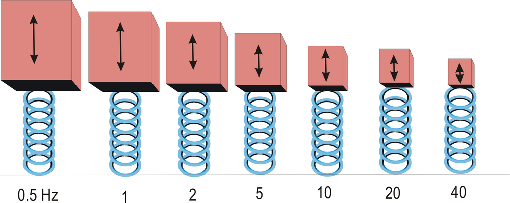
Key points about response spectra
- For a transient input such as an earthquake, the peak response is reported. For a steady-state periodic input the steady-state response is reported, and in that case damping must be present or the response would be infinite.
- The ground response spectrum is the spectrum computed from a record measured at the free surface of the ground. If the natural frequency of a structure is known, its peak response can simply be read off this curve — this is the basis of the seismic force calculation in almost every building code.
- Response spectra can also handle multi-degree-of-freedom systems: modal analysis gives the modes, the peak response of each mode is read from the spectrum, and the modal responses are combined, typically by the SRSS (square root of the sum of the squares) rule when the modal frequencies are well separated (CQC is used when they are close).
- Because phase information is lost in forming the spectrum, the combined result differs from a direct time-history result.
- Main limitation: response spectra are universally valid only for linear systems. They can be generated for nonlinear systems but are then applicable only to systems with the same nonlinearity, and the results cannot be directly combined for multi-mode response.
- Resonance case study: in the 1985 Mexico City earthquake the oscillation period of the deep soft lake-bed deposits matched the natural period of mid-rise concrete buildings; those buildings were destroyed while shorter (stiffer) and taller (more flexible) buildings suffered far less damage.
- George W. Housner began publishing response spectra at Caltech in 1941; Newmark and Hall later developed the idealised spectrum (EERI Monograph, 1982) that became the modern design response spectrum.
Design response spectrum in codes
A code spectrum is a smoothed, idealised envelope of many recorded spectra, given for each soil type and a nominal 5% damping. In IS 1893 (Part 1) it appears as the average response acceleration coefficient Sa/g, plotted against the fundamental period T for hard, medium and soft soil. The design horizontal seismic coefficient and base shear then follow:
Z = zone factor (0.36 for Zone V) — the Z/2 converts MCE to DBE for economical design
I = importance factor (function of occupancy, post-earthquake need, historical and economic value)
R = response reduction factor (ductility of the system); the ratio I/R shall not exceed 1.0
Sa/g = spectral acceleration coefficient read from the design spectrum for the period T
W = seismic weight = full dead load + the appropriate percentage of imposed load (roof live load is not included)
For a moment-resisting frame with brick infill panels IS 1893 gives Ta = 0.09 h/√d, and without infill Ta = 0.075 h0.75. Detailed application to masonry buildings, and the NBC 105 equivalents, are covered in Chapter 4.
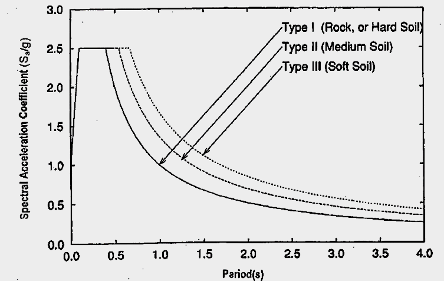
1.4.4 Methods of Seismic Analysis — Summary
| Method | Basis | When used |
|---|---|---|
| Equivalent lateral force (seismic coefficient) method | Total base shear from the code spectrum for the first mode only, distributed up the height | Regular, low- to medium-rise buildings that are relatively insensitive to earthquake characteristics — the normal method for masonry buildings |
| Response spectrum (modal superposition) method | Elastic dynamic analysis; peak modal responses read from the design spectrum and combined by SRSS/CQC | Taller or moderately irregular buildings where higher modes matter |
| Linear time-history analysis | Step-by-step solution of the equation of motion for a recorded or simulated accelerogram | Important structures; when the actual sequence of response is needed |
| Nonlinear static (pushover) analysis | Monotonically increasing lateral load until a target displacement; gives the capacity curve | Performance-based assessment and retrofitting studies (Chapter 6) |
| Nonlinear dynamic (inelastic time-history) analysis | Full nonlinear step-by-step solution | Most sophisticated; very irregular, very tall or critical structures |
1.5 Effects of Earthquake on Building 2081 Bhadra
PAST EXAM QUESTIONS ON THIS TOPIC:
- Explain an earthquake as a lateral force in a building. [8] (2081 Bhadra, Q1a)
- Describe the earthquake force parameters. [8] (2081 Bhadra, Q1b)
1.5.1 Nature of Earthquake Force — Earthquake as a Lateral Force 2081 Bhadra, Q1a
An earthquake does not apply a force to a building in the way that wind or a live load does. The ground simply moves; the building is dragged along with it, and the force is generated inside the building itself:
FI = mass × acceleration = m × a = (W/g) × a
Since the acceleration is imposed by the ground, and it is largest in the horizontal direction, the resulting inertia force acts essentially horizontally — that is, laterally on the building.
Why a lateral force develops
- When the ground shakes, the foundation of the building moves with the ground.
- The mass of the roof and floors, by inertia (Newton's first law), resists this motion and tends to stay where it was, so the upper part lags behind the base.
- This relative displacement between the base and the mass distorts the walls and columns and sets up internal forces in them.
- Because the ground reverses direction many times a second, the building swings back and forth and the lateral force reverses in sign for every cycle — unlike gravity load, which is one-directional.
- If the building were perfectly rigid, every point would move exactly with the ground and the inertia force would simply be m × PGA. Real buildings are flexible, so different parts move by different amounts and the force depends on the building's own dynamic properties as well.
Flow of the inertia force — the seismic load path
The inertia force is generated wherever there is mass, and it must be carried to the ground through a continuous and complete load path. In a masonry building it is:
- Walls parallel to the direction of shaking act as shear walls and carry the force efficiently by in-plane shear — they are strong and stiff in that direction.
- Walls perpendicular to the shaking are loaded out-of-plane, i.e. as vertical slabs spanning between floor and roof. Unreinforced masonry is very weak in this mode and overturns — this is the classic cause of collapse of Nepali masonry houses.
- If any link in the path is missing or discontinuous (no band, no wall-to-roof anchorage, no corner interlocking), the building loses box action and the walls fail individually.
Horizontal versus vertical shaking
- Ground shaking has three components; the two horizontal components generally govern design, because buildings are designed with a large factor of safety against vertical (gravity) load but have little inherent resistance to horizontal load.
- The vertical component is normally taken as about two-thirds of the horizontal, and is important for cantilevers, long spans and for masonry, where it momentarily reduces the compressive pre-load and hence the frictional shear capacity of the wall.
- Because vertical inertia force adds to and subtracts from gravity load, the axial force in piers fluctuates — combined with overturning this is why piers must be checked for the increase in axial load (Chapter 4).
1.5.2 Earthquake Force Parameters 2081 Bhadra, Q1b
The magnitude of the seismic force that a building must resist depends on three families of parameters — those of the ground motion, those of the structure, and the code coefficients that combine them.
(A) Ground motion parameters
| Parameter | Why it matters |
|---|---|
| Peak ground acceleration (PGA) | Directly fixes the inertia force, F = m a. Reported in g, m/s2 or Gal. |
| Peak ground velocity (PGV) | Best single indicator of damage to medium-period structures; governs energy input. |
| Peak ground displacement (PGD) | Governs long-period structures, bridges, pipelines and separation-gap requirements. |
| Duration of strong motion | Number of load reversals — masonry degrades cumulatively, so long duration is very damaging. |
| Frequency content / predominant period | Determines whether resonance with the building will occur. |
| Magnitude and focal depth | Control the energy released and how much of it reaches the surface. |
| Epicentral / hypocentral distance | Amplitude attenuates with distance; near-field records contain damaging velocity pulses. |
| Directionality | Amplification along the direction of rupture propagation. |
| Local soil stiffness | Acceleration is amplified in soft soil; also lengthens the predominant period. |
| Geographical / topographic amplification | Steep ridges and hill tops amplify base-rock accelerations by resonance. |
(B) Structural parameters
| Parameter | Why it matters |
|---|---|
| Seismic weight / mass W | Force is proportional to mass — heavy masonry and heavy roofs attract large forces. Reducing mass is the cheapest seismic improvement. |
| Stiffness | Governs the distribution of force among walls and the drift; stiff walls attract more force. |
| Fundamental natural period Ta | Sets the value of Sa/g read from the spectrum. It is an inherent property: more flexibility → longer T; more mass → longer T. Values range from about 0.05 s to 2.0 s for 1- to 20-storey buildings; T < 0.4 s for low- to medium-rise, T ≈ 2 s for high-rise. |
| Damping | Energy dissipation; codes assume 5% of critical damping. Higher damping reduces the response. |
| Ductility | Ability to undergo large inelastic deformation without collapse; allows the design force to be reduced by the factor R. |
| Configuration & regularity | Plan and vertical irregularity, torsion, soft/weak storey and mass irregularity all increase demand locally. |
| Foundation and soil–structure interaction | Type of foundation and the supporting soil modify the motion transmitted to the building. |
(C) Code parameters (IS 1893 / NBC 105)
These are simply the design shorthand for the parameters above: the zone factor Z (regional seismicity), the importance factor I (consequence of failure), the response reduction factor R (ductility and redundancy), the soil/site factor and the spectral acceleration coefficient Sa/g (period and soil). Together they give Ah and hence the design base shear VB = AhW, as set out in §1.4.3.
1.5.3 Effects of Earthquake on Buildings
The deformation imposed by the ground produces the following effects, which for masonry appear as characteristic damage patterns:
| Effect | Description & typical damage |
|---|---|
| Inertia force & base shear | Horizontal force at every floor level accumulating to a maximum at the base. |
| Overturning | The lateral force acting at a height produces an overturning moment, which increases the axial compression in the leeward piers and can cause tension (uplift) in the windward piers. |
| Sliding | Horizontal sliding of a wall along a bed joint or at the plinth when the shear demand exceeds the friction available. |
| In-plane shear | Diagonal tension produces the classic X-shaped (cross) diagonal cracks in piers and spandrels between openings. |
| Out-of-plane bending | Walls perpendicular to shaking bend and overturn like vertical cantilevers/slabs — the most common collapse mechanism of unreinforced masonry. |
| Corner separation | Vertical cracks and separation at wall intersections because the in-plane and out-of-plane walls deform incompatibly; damage in masonry buildings typically starts at the corners. |
| Roof / floor separation | Poorly anchored roofs slide off the walls; heavy roofs then collapse onto the occupants. |
| Delamination | Multi-wythe stone-in-mud walls split through their thickness and the leaves collapse outward — the dominant mechanism in the 2080 Jajarkot earthquake. |
| Torsion | Eccentricity between the centre of mass and the centre of rigidity twists the building in plan, adding shear to the far walls. |
| Soft / weak storey | An open ground storey concentrates all the drift in one level and collapses. |
| Pounding | Adjacent buildings of different height/period hammer each other; spalling occurs at floor-beam level. |
| Short column effect | Partial-height infill or mezzanines shorten a column, increasing its stiffness and attracting shear until it fails in brittle shear. |
| Non-structural damage | Failure of parapets, gable walls, chimneys, cornices and heavy overhangs — a major cause of casualties in the street. |
| Foundation effects | Differential settlement (doming and dishing), liquefaction-induced tilting, and diagonal tension cracks caused by differential settlement. |
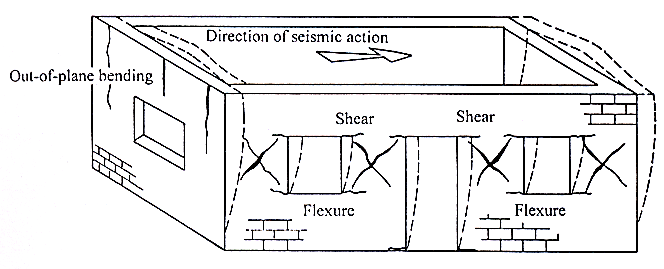
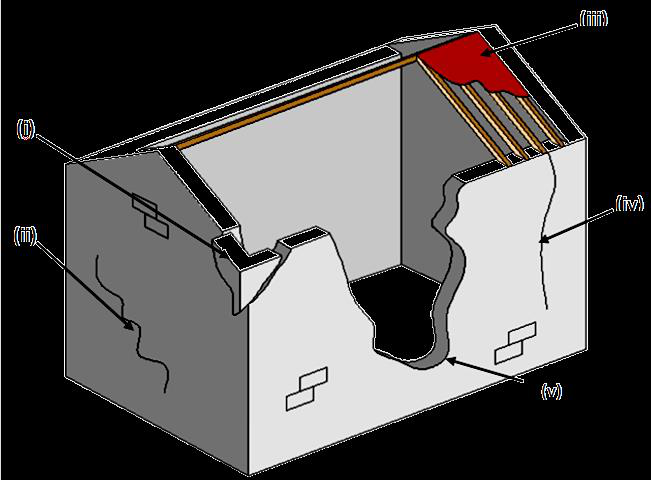
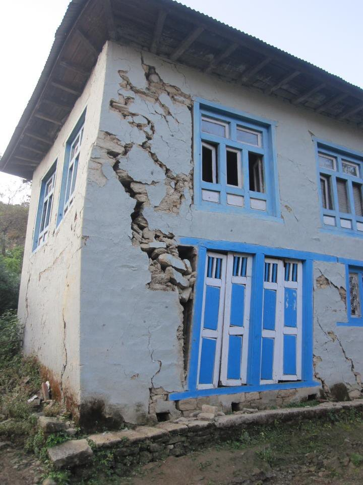
1.5.4 Seismic Design Philosophy
Designing a building to remain undamaged in the strongest possible shaking is prohibitively expensive, while ignoring earthquake effects leads to disaster. The accepted philosophy therefore lies between the two extremes:
(b) Under moderate but occasional shaking — main members may sustain repairable damage; other parts may be damaged so badly that they must be replaced.
(c) Under strong but rare shaking — main members may sustain severe, even irreparable damage, but the building shall not collapse, so that life is saved.
In other words, damage is unavoidable and is deliberately permitted; the engineer's task is to control where the damage occurs and keep it to an acceptable level at a reasonable cost — much like an electrical fuse, some pre-determined parts are allowed to yield in a ductile way so that the rest survives. This is the basis of capacity design.
1.5.5 The Four Virtues of an Earthquake-Resistant Building
| Virtue | Meaning |
|---|---|
| (a) Good structural configuration | Its size, shape and structural system are such that they ensure a direct and smooth flow of inertia forces to the ground — simple, regular, symmetric plan and elevation. |
| (b) Adequate lateral strength | The maximum lateral force it can resist is such that the damage induced does not result in collapse. |
| (c) Adequate stiffness | Its lateral load resisting system limits the earthquake-induced deformation so that contents and non-structural elements are not damaged under low to moderate shaking. |
| (d) Good ductility | Its capacity to undergo large deformation after yielding without losing strength, improved by favourable design and detailing. |
Principles of ductility: avoid shear failure, avoid compression failure, ensure continuity, and confine the critical regions where plastic hinges may form. Configuration-related parameters to check are: load path, geometry, redundancy, weak storey, soft storey, vertical discontinuities, mass irregularity, torsion and short columns.
Quick Revision — Facts and Formulae to Memorise
- Inertia force: F = m a = (W/g) a — the whole of earthquake engineering starts here.
- Base shear: VB = AhW with Ah = (Z/2)(I/R)(Sa/g); I/R ≤ 1.0.
- Energy–magnitude: log10E = 11.8 + 1.5M; +1 magnitude = 10× amplitude = ~31.6× energy.
- Wave speeds: P ≈ 6 km/s > S ≈ 3 km/s > Love > Rayleigh (≈ 0.9 VS). Order of arrival P → S → L → R.
- S waves do not travel through liquids — proof that the outer core is molten.
- Focal depth classes: shallow < 70 km, intermediate 70–300 km, deep 300–700 km.
- Units of PGA: 1 g = 9.81 m/s2 = 981 Gal.
- MMI has 12 grades (I–XII), Roman numerals, many values per earthquake; Richter is a single logarithmic number per earthquake.
- Damping assumed in code design spectra: 5% of critical.
- Natural period range: 0.05–2.0 s for 1–20 storeys; T < 0.4 s for low/medium-rise masonry.
- Nepal convergence: ~2 cm/yr absorbed across the Himalaya; MHT is locked and stores the strain.
- Key Nepali earthquakes: 1255 (first recorded), 1934 M8.4 (Nepal–Bihar), 1988 M6.6 (Udayapur), 2015 Mw7.8 (Gorkha), 2080 BS M6.4 (Jajarkot).
Chapter Summary
An earthquake is the vibration of the earth caused by the rapid release of elastic strain energy stored in rocks, usually by sudden slip on a fault. The driving mechanism is plate tectonics; the release mechanism is described by the elastic rebound theory. The point of rupture is the focus and the point above it on the surface the epicentre. Nepal's earthquakes originate from the continued northward convergence of the Indian plate beneath Eurasia at about 2 cm/yr, taken up on the locked Main Himalayan Thrust and its splays MFT, MBT and MCT — a continent–continent collision that produces very large shallow earthquakes but no volcanoes.
The released energy travels as body waves (P — compressional, fastest, through any medium; S — shear, solids only, most damaging) and surface waves (Love — horizontal shear; Rayleigh — rolling), which are recorded on a seismogram; the S–P interval at three or more stations locates the epicentre. The size of an earthquake is given quantitatively by its magnitude (Richter, moment magnitude), where one unit means ten times the amplitude and about 32 times the energy, while its effect at a place is given qualitatively by intensity on the 12-grade Modified Mercalli scale, mapped as isoseismals. The destructiveness of a record is described by its amplitude (PGA, PGV, PGD), duration and frequency content; damage at a site depends on source, path and site conditions, especially soft-soil amplification.
In the time domain the motion is described by the accelerogram (time history), in the frequency domain by the Fourier/frequency spectrum, and for design by the response spectrum — the plot of peak response of SDOF oscillators of varying period at 5% damping, which codes smooth into the design spectrum Sa/g used to compute Ah and the base shear VB = AhW. Finally, earthquake force on a building is an inertia force, F = ma, acting essentially laterally because the base moves while the mass lags behind. It must flow from the floor and roof diaphragms through the in-plane walls to the foundation. In unreinforced masonry it produces sliding, overturning, in-plane diagonal (X) cracking, out-of-plane collapse, corner separation, roof separation, delamination, torsion and pounding. The design philosophy accepts damage but not collapse, and an earthquake-resistant building must possess four virtues: good configuration, adequate lateral strength, adequate stiffness and good ductility.
All Past Exam Questions from this Chapter
CHAPTER 1 — COMPLETE LIST (CE 72502 / ENCE 367)
- Explain an earthquake as a lateral force in a building. [8] (2081 Bhadra, Q1a) → §1.5.1
- Describe the earthquake force parameters. [8] (2081 Bhadra, Q1b) → §1.5.2
- Define earthquake, its source and influencing factor of shaking in the location. [8] (2080 Bhadra, Q1a) → §1.1.1, §1.1.2, §1.1.9
- Define elastic rebound theory. Explain the origin of earthquakes in Himalayas. [8] (2079 Bhadra, Q1a) → §1.1.6, §1.1.8
- Explain the magnitude and intensity of the earthquake. Compare the MMI scale with the Richter scale. [8] (2079 Bhadra, Q1b) → §1.2.5–1.2.7
- Explain Richter scale and MMI scale. [6] (2078 Bhadra, Q1a) → §1.2.5, §1.2.6
Closely related questions that belong to Chapter 3 but are usually answered using Chapter 1 material: “Describe failure mechanism of masonry building during earthquake” (2080 Bhadra Q1b, 12 marks), “major failure mechanism during Gorkha earthquake” (2078 Bhadra Q1b, 6 marks) and “failure mechanisms of stone masonry with mud mortar during the 2080 Jajarkot earthquake” (2081 Bhadra Q2a, 8 marks). Use §1.5.3 and Figs. 1.21–1.24 as the base of those answers.